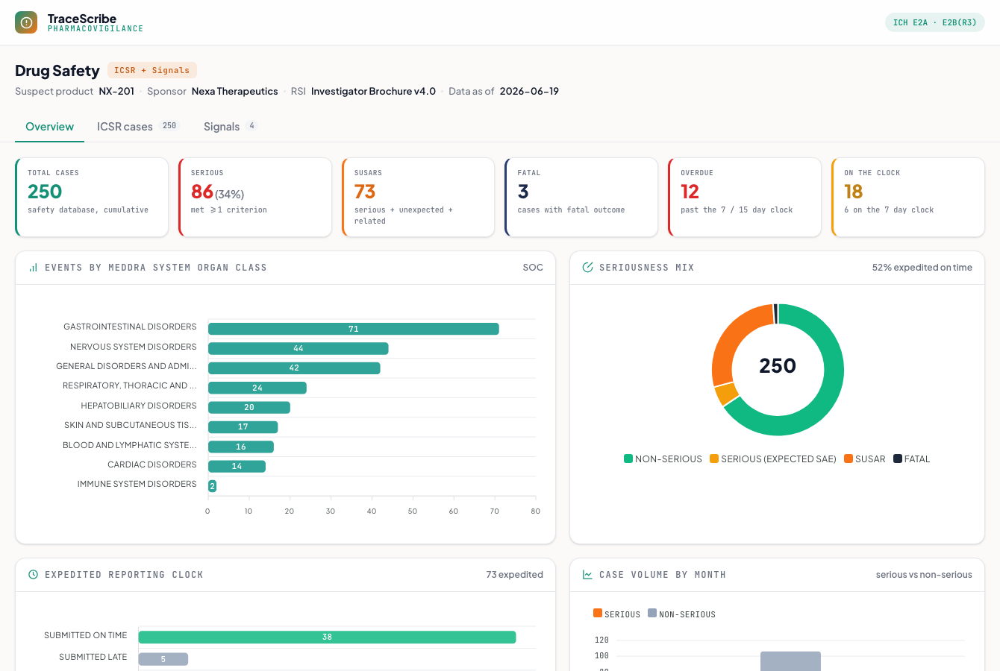

Pharmacovigilance
A clinical-trial drug-safety command center: ICSR case processing, MedDRA coding, the SUSAR expedited-reporting clock, and signal detection by disproportionality. Built to ICH E2A / E2B(R3) and MedDRA conventions.
What it does
Runs the safety side of a trial. Every adverse event becomes an Individual Case Safety Report (ICSR), coded to MedDRA and assessed for seriousness, causality, and expectedness; if it is a SUSAR it is raced against a regulatory reporting clock. Across the cumulative safety database, disproportionality analysis screens for emerging signals.
How it works
- ICSR line listing: every case with its verbatim term coded to a MedDRA PT and SOC, seriousness (and which of the six criteria), WHO-UMC causality, and expectedness vs the Investigator Brochure. Click a case to expand the full report, laid out by E2B(R3) section (patient, reporter, suspect drug, event + the MedDRA coding ladder, assessment, reporting clock).
- SUSAR + the reporting clock: a case that is serious, unexpected, and related is a SUSAR; fatal or life-threatening ones run on a 7-day clock, the rest 15 days (ICH E2A), counted from Day 0 receipt, with overdue cases flagged.
- Command center: KPIs (serious %, SUSARs, fatal, overdue, on-clock), the MedDRA System Organ Class distribution, the seriousness mix, expedited-reporting compliance, and case volume over time.
- Signal detection: a 2x2 disproportionality analysis per drug-event pair (PRR, ROR with 95% CI, chi-square), flagging a signal where PRR is at least 2, chi-square at least 4, and at least 3 cases, a screen, not proof of causation.
Unlike the other demos there is no single source app for this one; it is a from-scratch recreation grounded in the pharmacovigilance standards (ICH E2A / E2B(R3) / E2F, MedDRA v27.1, WHO-UMC causality, PRR / ROR disproportionality). The safety database is synthetic; the MedDRA SOC and PT terms are the real vocabulary, and every figure is computed from the cases.

Static preview - click to open the live, interactive demo